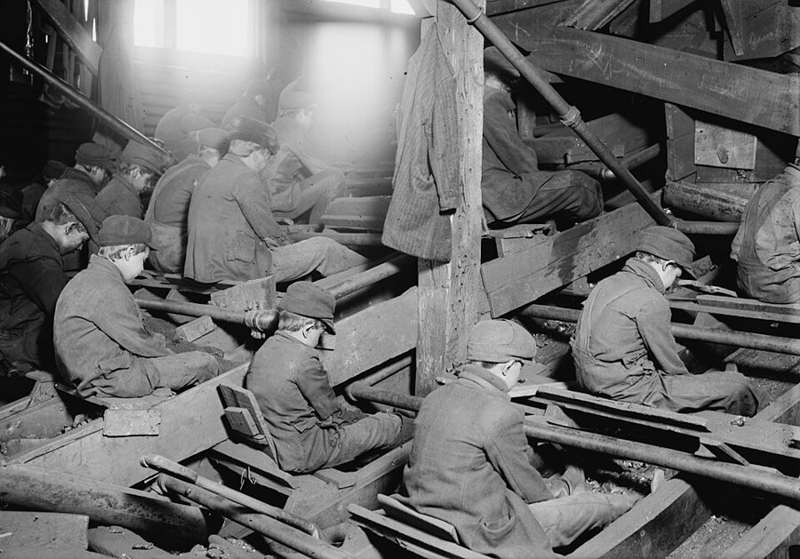
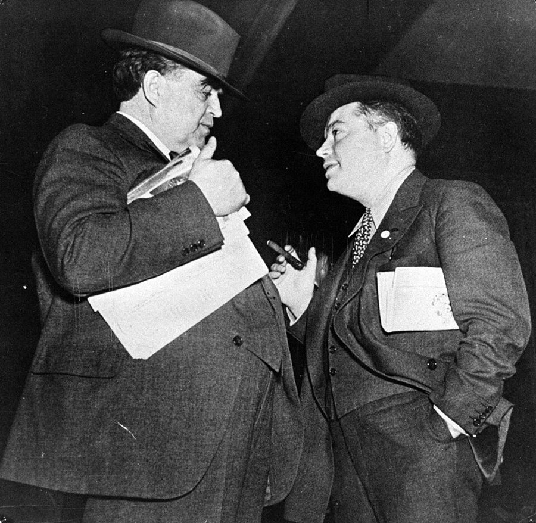
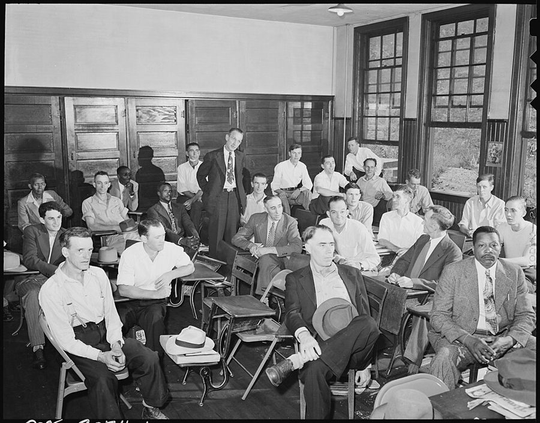
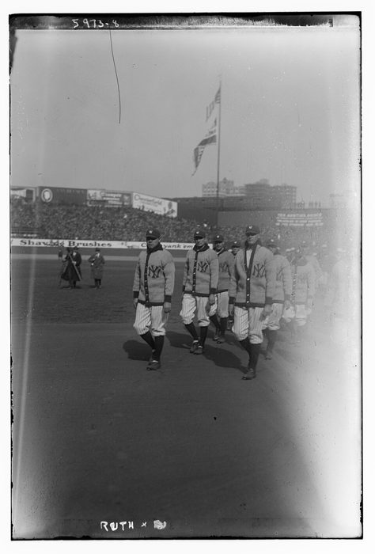

这一章在做什么
作者从一个问题讲起：两百年来美国工人的处境大大改善，功劳该记在谁头上？多数人会说工会或政府，作者说都不对。他把工会当成卡特尔来分析：抬高工资、用执照限制入行、和雇主串通，替一部分人拿到高工资，账却记在挤不进来的工人和消费者头上，最低工资法也算在这里面。政府保护得最好的是它自己的雇员。真正保护工人的，是还有别的雇主想雇他。读的时候抓两条线：高工资的钱从谁那里来；保护为什么来自竞争。

1911 年，宾夕法尼亚州一座无烟煤选煤场里的「拣煤童工」（breaker boys），坐在溜槽上把煤里的石块挑出来。§1 开头说的「一百年前常见的累垮人的活」，就是这一类。Lewis Hine（为美国全国童工委员会拍摄），公有领域，维基共享资源 读之前：先下注
第 1 章说价格决定收入，第 1 章 §3 还预告过：最低工资和工会的「限制入行」会扭曲工资这个价格，留到第 8 章细说。这一章就是那笔账。它和第 7 章（谁在保护消费者）是一对：第 7 章问保护消费者的机构，这一章问保护工人的。作者的工具还是第 1 章那两样：价格（这里是工资）的三种功能，以及「好意的政策、实际的结果」之分。他在第 4 章讲过的「拿别人的钱花在别人身上」，在讲政府雇员工会时又用了一次。
过去两百年，美国普通工人的工资涨了很多倍，工时变短，活也轻了。你觉得主要该归功于什么？
工会：罢工和集体谈判一点一点争来的
政府立法：工时、童工、安全、最低工资这些法律
技术进步：机器替人干了重活，跟谁来保护无关
雇主之间抢工人，加上投资和技能让每个人干得更多
工会和政府立法两样合起来
一个强大的工会给会员争到了明显高于别处的工资。这笔多出来的钱，主要是谁出的？
公司的利润
买这个行业产品的消费者
别的工人：进不了这一行、被挤到别处的人
纳税人
没有人出：高工资逼企业提高效率，饼做大了
工人的处境靠什么保护：工会、政府的法律，还是街对面另一个想雇他的老板？一个人多拿的工资，是从别人那里拿来的，还是新做出来的？
作者说强工会会员的高工资「主要来自别的工人」。这一步推理靠的是哪条经济学原理？你觉得链条里哪一环最弱？§2
执照制度「给出的理由」和「真正的原因」，作者为什么要分开说？他用什么办法判断真正的原因？§2
作者说最低工资是最「反黑人」的法律之一。他拿出的证据是什么？这些证据能排除别的解释吗？§2
Babe Ruth 和因最低工资失业的少年，作者为什么把他们放在同一节？§4–§5
这一章的论证骨架
这一章的结构就是开头那道题的四个答案：工会、政府、没有人、别的雇主，各占一节，最后一节收尾。头重脚轻：§2 讲工会占了全章七成多，里面又分两个斜体小标题（谁得益、工会权力从哪来），后者再分三个斜体段首（抬高工资率、限制人数、工会与雇主串通）。最低工资法放在「抬高工资率」底下讲，容易读着读着忘了自己在哪一层。
两百年来，工人的处境靠谁改善？· §1
工会 · §2
政府 · §3
没有人 · §4
别的雇主 · §5
抬高工资率
限制人数（执照）
和雇主串通
代价：别的工人、
消费者
一般劳动法
OSHA 等监管
政府雇员
护得最好的是自己人；
代价：纳税人
只有一个雇主
如 Babe Ruth
没有雇主
被最低工资挡在外面、
领救济、领社保的人
有别的老板
想雇你
＝竞争
最可靠、最不坏
的保护
结论 · §6
从别人那里拿
工会会员、政府雇员的高工资
把饼做大
生产率、资本、技能，谁也不吃亏
本站画的示意图。§4 的小标题 NO ONE 就是开头民调里的第三个答案「没有人」：作者先否定它，到 §4 又用它指那些真正没人保护的人。 边读边填：每行一个问题，读到答案就写一两句。只存在你这台设备的浏览器里，别人看不到。
读完了？对照我找到的
谁得益：本来就高薪的技术工种；医生、航空公司飞行员、木匠管道工等手艺工会，还有政府雇员。
谁出钱：工资福利约占国民收入八成，公司利润税前不到一成、税后约 6%，全拿来也不够，还会毁掉投资。
权力来源：工资率靠《戴维斯-培根法》、最低工资和对暴力的宽容；人数靠州政府的执照；串通靠反托拉斯法对工会的豁免。
分配岗位：裙带、资历和学徒规矩、多雇闲人、回扣，还有种族歧视。
政府雇员：马里兰州蒙哥马利县；环保局开除一个总迟到的打字员用了 19 个月。
真正的保护：别的雇主护着工人，别的工人护着雇主，别的卖家护着消费者；邮政、长途火车、学校。
分节地图
原书这一章没有给节编号。§1 是第一个小标题之前的开篇（照抄的是第一段开头几个词），§2–§6 的粗体是书里印的全大写小标题，Kindle 里可以直接搜。每一节下面自动标出纸书页码、在本章录音里大约第几分钟、译本里对应的小节名。建议分两次读；读完一节回来打个勾。
第一次坐下§1–§2 · 约 5500 词 · 工会：谁得益，权力从哪来。太长可以在斜体小标题 The Source of Union Power 前歇一下
Over the past two centuries the…约 300 词 一道民调式的问题，先否掉工会和政府两个答案。译本把末段的意思译反了。 LABOR UNIONS约 5200 词 全章主体：希波克拉底誓言、AMA、谁得益、三种权力来源，最低工资法在中间。 第二次坐下§3–§6 · 约 1500 词 · 政府、没有人、别的雇主、结论
GOVERNMENT约 700 词 一般劳动法和 OSHA 的笑话，然后是政府雇员：蒙哥马利县，开除一个打字员。 NO ONE约 400 词 译本小节名意译了。只有一个雇主的 Babe Ruth，没有雇主的失业少年和领救济的人。 OTHER EMPLOYERS约 300 词 全章的答案：别的雇主。末尾把邮政、长途火车、学校拉进来。 CONCLUSION约 200 词 两种高工资对照：从别人那里拿，还是把饼做大。
背景：作者默认你知道的事
按在书里出现的顺序排，标题前是节号。书写于 1979 年，书里的「今天」「近来」都是那时候。
§1 盖洛普，工会会员，新政盖洛普（Gallup）是美国最老牌的民意调查机构，1930 年代起做全国民调；书里那次民调是假设的。「新政」（New Deal）指罗斯福 1933 年上台后的一系列改革，其中 1935 年的《全国劳资关系法》（又称 Wagner Act）保障工人组织工会、集体谈判的权利，此后十年工会会员大增。作者说 1900 年只有 3% 的工人是会员，成书时不到四分之一。
§2 希波克拉底和他的誓言希波克拉底（Hippocrates）是公元前 5 世纪的希腊医生，生在爱琴海的科斯岛（Kos），被尊为「医学之父」。他的生平多是传说，誓言是谁、在什么时候写的，学界没有定论，所以书里一再加上「相传」。作者引的两条誓词：一条只把医术传给自家人和立过誓的学生，一条说不给结石病人开刀、留给专做这门手艺的人。
12 世纪拜占庭的一份希腊文抄本，誓言被抄成了十字形。作者不详，公有领域，维基共享资源
§2 美国医学会，和 Friedman 自己的研究美国医学会（American Medical Association，AMA）1847 年成立。1910 年 Flexner 报告之后，大批质量差的医学院关门（到 1930 年美国只剩 76 所），由 AMA 的医学教育委员会认可哪些学校，成了各州发执照的前提。作者这一段背后有 Milton Friedman 自己的研究：他和 Simon Kuznets 合写的《独立执业者的收入》（1945）认为，医生收入高出牙医的一部分来自 AMA 限制入行，这个结论在出版机构内部起了争议，拖了几年才出版。
§2 纽约的财政危机，劳联-产联1975 年纽约市差一点还不上债，州政府派机构接管了市财政。福特总统起初拒绝联邦救助，《每日新闻》的头版标题是「福特对纽约说：去死吧」（Ford to City: Drop Dead），到年底才批了贷款。作者说市政工会的工资和提前退休的优厚养老金是主因。AFL-CIO（劳联-产联）是美国最大的工会联合会，1955 年由两个联合会合并而成。
§2 《戴维斯-培根法》和最低工资《戴维斯-培根法》（Davis-Bacon Act）是 1931 年的联邦法律：联邦出钱的建筑工程，要按劳工部长认定的当地「通行工资」付酬，这部法至今有效。联邦最低工资始于 1938 年的《公平劳动标准法》（Fair Labor Standards Act），起点是每小时 25 美分。书里 1979 年的 2.90 美元，按美国消费物价指数折算约合 2024 年的 12.5 美元。
§2 Lewis、煤炭法、反托拉斯法1890 年的《谢尔曼反托拉斯法》禁止企业串通定价、瓜分市场。1914 年的《克莱顿法》写明人的劳动不是商品，想让工会不受反托拉斯法约束；最高法院起初解释得很窄（1921 年的 Duplex 案），要到 1932 年的《诺里斯-拉瓜迪亚法》和 1941 年的 Hutcheson 案以后，工会只要自己行事、不和雇主联手，才基本不受反托拉斯法约束。两部 Guffey 煤炭法（1935、1937）想让烟煤业合法地统一定价，第一部 1936 年被最高法院判为违宪。
John L. Lewis 1880–1969 1920–1960 年任美国矿工联合会（United Mine Workers，UMW）主席，1930 年代牵头成立产业工会联合会（CIO），是那个年代最有名的工会领袖。
Dave Beck David Beck 卡车司机工会（Teamsters）主席，1952–1957 年在任，后来因侵吞工会款项和申报虚假税表入狱。
James Hoffa Jimmy Hoffa Beck 之后的卡车司机工会主席，1967 年入狱，1975 年失踪，至今下落不明。
George Hopkins George E. Hopkins 历史学家，《航空公司飞行员》（The Airline Pilots，1971）研究飞行员工会怎样成了「精英工会」。

1945 年杜鲁门召开的劳资会议上，John L. Lewis（左）和服装工人工会领袖 David Dubinsky 交谈。作者不详，CC BY 2.0，维基共享资源 
1946 年 9 月，肯塔基州 Wheelwright 煤矿的矿工联合会地方分会，星期天上午借学校教室开会。摄影师 Russell Lee 当时受雇于内政部的煤矿管理局，为联邦政府对煤矿业医疗和生活状况的调查拍照。Russell Lee，公有领域，维基共享资源 §2 急救员（paramedic）paramedic 是受过专门训练、能在现场做心肺复苏、除颤、给药的急救员，不是执业医生。1970 年前后，美国一些城市开始训练消防队员干这一行，书里那位老板的公司就附属于南加州的一个消防局。在那以前，救护车的主要任务是把人尽快拉到医院。
西雅图的 Medic One 急救车，约 1970 年。这个由消防局和医院合办的项目 1970 年 3 月出车，是美国最早的院前心脏急救项目之一，与书里那家南加州公司无关。Seattle Municipal Archives，CC BY 2.0，维基共享资源
§3 OSHA、环保局、蒙哥马利县职业安全与健康管理局（OSHA）根据 1970 年的《职业安全与健康法》设立，隶属劳工部，正式名称是 Occupational Safety and Health Administration，书里写成 Office of… 是笔误。环保局（EPA）也是 1970 年成立的。马里兰州的蒙哥马利县（Montgomery County）紧挨华盛顿西北边，住着大批联邦公务员。
§4 Babe Ruth，社会保障的收入限制Babe Ruth（1895–1948）1920 年从波士顿红袜队转到纽约扬基队，打出了当时没人能比的本垒打数。书里说的「两个大联盟」是美国联盟和国家联盟。§4 末尾说的是社会保障的收入检验（earnings test）：72 岁以下的领取者，工作收入超过一个不高的数额，就要被扣发养老金。

1923 年 4 月 18 日扬基体育场启用当天，扬基队员列队入场，底片上的手写标注指的是 Ruth。§4 说扬基的球场最大、付得起最高的薪水。Bain News Service，公有领域，维基共享资源 这一章的经济学，先用中文过一遍
这一章用到、作者一句带过的几个概念。读之前过一遍，读的时候就不会卡在概念上。
需求法则用在工资上
需求法则（law of demand）：一样东西越贵，人们买得越少。劳动也是一样东西，工资就是它的价格。工会把某一行的工资抬到市场水平之上，雇主就少雇人、多用机器、少接这类活，这一行的岗位变少。本来想进这一行的人没进去，只好挤到别的行业，那边的人一多，工资就被压下去。这就是作者说「强工会的收益主要来自别的工人」的那根链条，他还加了一笔：这一行的产品变贵，大家作为消费者也吃亏。
有工会的行业
其他行业
工资
雇的人数
需求
工会工资
原来的工资
岗位少了
工资
干活的人数
需求
原来的工资
工资降了
挤进来的人
进不去的人
转到别处
本站画的示意图。左边：工资被定高，岗位从实心点退到彩色点。右边：多出来的人挤进来，工资往下走。作者的论点是右边那块损失常被忽略。 定价和限量是一回事，多出来的人怎么挑
卡特尔要么定一个高价，要么限制产量，两样效果相通：价高了卖得少，量少了价自然高。工会也一样，可以直接定工资率（工资高了，雇的人自然少），也可以直接限制入行的人数（人少了，工资自然高），执照就是后一种办法。第 1 章讲过油价被压低就排队；这里是反过来，工资被抬高，想进来的人比岗位多。价格不再负责挑人，别的办法就会顶上：亲戚优先、按资历排队、收回扣，甚至按肤色。作者说这些办法注定是武断的，因为本来就没有「公平」的挑法。
利润在国民收入里占多大一块
国民收入可以粗分成付给劳动的（工资、薪水、福利）和付给资本、土地的（利息、租金、利润）。作者给的账是：前者约占八成；剩下两成里一半多是租金和利息；公司利润税前不到一成，税后约 6%。所以「从利润里给工人涨工资」能动的空间很小，而且利润正是投资和创新的动力，拿光了就是杀鸡取卵。这些是 1970 年代末的数，读的时候记住比例的量级就行。
只有一个买家的时候
卖东西的人怕只有一个买家，打工的人怕只有一个雇主：对方开价，你只能接受或者走人。经济学把「只有一个卖家」叫垄断，「只有一个买家」叫买方垄断（monopsony），作者没用这个词，§4 的「只有一个可能的雇主」说的就是它。他的例子很特别：Babe Ruth 不是穷工人，而是一个只有扬基付得起全价的明星。§5 由此推出全章的结论：工人最好的保护是有很多雇主在抢人。
英文 译本译作 一句话 law of demand 需求法则 价格越高，买的越少。用到劳动上：工资越高，雇的人越少。§2 labor union / craft union 工会 / 手工业者工会 按行业手艺组织的工会（木匠、管道工、泥瓦匠）是美国最老的一类。§2 closed shop 封闭式雇佣制度 只能雇本工会会员的安排。§2 cartel 卡特尔 同行串通定价、分市场。作者说有的工会是在替一个行业组织卡特尔。§2 licensure 颁发执业许可证 / 从业执照 没有州政府发的执照就不许干这一行。限制人数的主要办法。§2 minimum wage 最低工资 法定的最低时薪，1979 年是 2.90 美元。§2 prevailing wage 普遍享有的工资率 《戴维斯-培根法》要求按当地通行工资付酬，实际多按工会工资。§2 antitrust laws 反托拉斯法 禁止企业串通定价、瓜分市场的法律；1930–1940 年代以后，工会只要不和雇主联手，基本不受它约束。§2 seniority 资历 按在这里干了多少年排先后，裁人先裁新来的。§2 featherbedding 超额雇用 工会规定多雇用不必要的人手，把活摊开。§2 on-the-job training 在职培训 边干边学，是低技能的年轻人积累人力资本的主要途径。§2 workmen’s compensation 工人补偿费 雇主为工伤出钱的保险制度，即工伤赔偿。§3 special interest group 利益集团 为一小群人的利益游说的团体。作者说政府雇员的代表常是州议会里的主要一支。§3 only one possible employer （只有）一位可能雇主 经济学里叫买方垄断，作者用 Babe Ruth 举例。§4 productivity 生产率 每个人每小时能做出多少东西。作者说只有它带来的加薪不从别人那里拿。§6
这一章的译本有几处要留心。§1 末段，作者说今天工人的处境本身就驳倒了「没有人」这个答案，译本成了多数工人赞同这个答案，意思反了；同一节的 1900 年印成了 1990 年。§2 讲 AMA 那段末句，作者说我们都有把「对自己有利」当成「对社会有利」的本事，译本成了一句「必须相信」；木匠的例子里，houses（房子）译成了「家具」；讲反托拉斯豁免那段，作者说利用豁免的工会更像是在出售「把一个行业组织成卡特尔」的服务，译本说成真正利用豁免的是企业，又反了；最低工资那段，青少年失业率比平均高「本在意料之中」，译本说成比预料的还高，末句说的是法律不许他们拿低工资换在职培训，译本也没译对。§3 的 affirmative action（平权措施）被译成了监管和奖惩之类的意思。§4 的「两个大联盟」译成了两个俱乐部。§6 的 more widely diffused skills（更普及的技能）译成了「更加先进的技术」。读这几处建议对照英文。
词与短语
读英文时用；这一章读译本的话可以跳过。词条按在书里出现的顺序排，按节分组；读一节之前先把这一节的过一遍，读的时候就不用停。斜体小字是原句里连续的几个词，在 Kindle 里搜它就能找到那一句。标着「每个字都认识」的，是字面意思会把你带偏的。
§1 Over the past two centuries the…
backbreaking
… the kind of backbreaking labor that …
累断腰的，极其繁重的
fringe benefits
… vacations and other fringe benefits are …
（工资以外的）附加福利
fringe 本义是边缘、流苏。指带薪假、医保、养老金这类工资之外的待遇。
the affluent few
… only the affluent few could earlier …
少数富人
lot
… the improvement in the lot of …
境况，命运
the lot of the worker 是「工人的处境」，不是「很多」。全章反复出现。
beat both
… would beat both. Yet the history …
（票数）比这两个都多
作者开玩笑：答「没有人」「不知道」的，说不定比答工会和政府的还多。
as late as
… As late as 1900, only 3 …
直到……（时还）
强调「晚到那时都还」只有 3%。
belie
… the worker today belies that answer.
证明……是错的
belie 是「与……相矛盾，揭穿」，不是「相信」。今天工人过得好，本身就说明有人（有东西）在起作用。
§2 LABOR UNIONS
egregious
… of the most egregious misuses of …
极其严重的，离谱的
labor
… reports that “labor opposes” such and …
劳方，劳工界
报纸上的 labor 常常就是指工会。作者说这是偷换：四分之三的工人不是会员。
let alone
… let alone with the interests of …
更不用说
higgling
… “The higgling and bargaining of the …
讨价还价
斯密的老式用词，和 haggling 同义。
throwback
… they are a throwback to a …
倒退回……的东西，返祖
作者说工会不是现代工业的产物，而是退回到中世纪的行会。
guild
… to the guilds that were the …
（中世纪的）行会
medical men
… among medical men in Greece.
行医的人
旧式说法，今天说 physicians 或 doctors。
rationalize
… to “rationalize” the discipline in order …
（对一个行业）整顿、规范化
带引号是反讽：「整顿」的实际意思是减少竞争。下面的 unfair competition 也一样。
unfair competition
… to eliminate “unfair competition.”
「不正当竞争」
引号里是同行常用的说法，作者的意思是：所谓不正当，就是抢了我的病人。
subscribe to
… required to subscribe to that oath.
签署、宣誓遵守
不是「订阅」。
sleeper
… also contains a few sleepers. Consider …
不起眼却有分量的条款
sleeper 指埋着、一开始没人注意的东西。
closed shop
… the prelude to a closed shop.
只雇工会会员的制度
不是「关门的店」。第 2 章出现过。
even for the stone
… “I will not cut, even for …
即使是结石，我也不开刀
the stone 指肾结石、膀胱结石。cut 是动手术。
a nice market-sharing agreement
… a nice market-sharing agreement between physicians …
好一份瓜分市场的协议
nice 是反话。physicians 指内科医生，和后面的 surgeons（外科医生）相对。
turn in one’s grave
… must turn in his grave when …
（气得）在坟墓里翻身
死者若知道会极其不满。
duly apprenticed and sworn
… with “duly apprenticed and sworn” physicians …
正式拜过师、立过誓的
原样搬用了誓词里的话。
organized medicine
… the actions of organized medicine itself.
医学界的组织（尤指 AMA）
organized 在这里是「结成团体的」，和后面的 organized labor 同一用法。
put to one side
… We shall put to one side …
暂且搁下不谈
with or without unions
… highly paid with or without unions.
不管有没有工会
意思是这些人本来就会拿高薪，工会只是锦上添花。
craft union
… States are the craft unions—carpenters, plumbers, …
（按手艺组织的）行业工会
和按产业组织、什么工种都收的 industrial union（产业工会，如汽车、钢铁）相对。
sanitation workers
… policemen, sanitation workers, and every …
环卫工人
to the verge of bankruptcy
… city to the verge of bankruptcy.
到了破产的边缘
gang up
… the unions to gang up at …
联起手来（对付第三方）
a tribute to
… is a tribute to the strength …
证明了，归功于
不是「贡品」。X is a tribute to Y：X 说明 Y 很了不起。
in any event
… who would in any event be …
无论如何（都会）
command (a wage)
… they will command higher wages. Keep …
能要到、赢得（高工资）
不是「命令」。command a price 是「能卖到这个价」。
kill the goose that lays the golden eggs
… kill the goose that lays the …
杀掉下金蛋的鹅，杀鸡取卵
伊索寓言。这里的鹅是利润。
leeway
… hardly provides much leeway to finance …
回旋余地
wherewithal
… provided the wherewithal for higher and …
所需的钱，本钱
one of us
… thirty years ago one of us …
我们两人中的一个
指 Milton Friedman 本人，估计出自他 1951 年的一篇文章。译本作「有人」，看不出是作者自己。
order of magnitude
… roughly the order of magnitude of …
大致的量级
不是「秩序」。意思是具体数不一定准，但大小差不多。
basket of goods
… The total basket of goods available …
（大家能得到的）商品总量
「一篮子商品」，统计物价时的说法。
collude with
… by colluding with employers to enforce …
与……串通
lucrative
… limited number of lucrative jobs among …
赚钱的，油水大的
nepotism
… have been adopted: nepotism—to keep the …
任人唯亲
apprenticeship rules
… seniority and apprenticeship rules; featherbedding—to spread …
学徒规矩（要先当几年学徒才能入行）
译本作「学历」，不对。
featherbedding
… featherbedding—to spread the work around; …
强迫多雇闲人
featherbed 是羽绒褥子，引申为让人躺着拿钱。to spread the work around 是把活摊给更多人。
kickback
… Kickbacks to union officials to secure …
回扣
the “ins”
… support among the “ins” as a …
已经在里面的人，圈内人
和要被挡在外面的 outs 相对。
Capitol Hill
… clustered around Capitol Hill in Washington, …
国会山，指美国国会
a ward of the state
… practically a ward of the state.
由国家监护的人
ward 是被监护人（如孤儿），不是病房。
prevailing
… “prevailing for the corresponding classes of …
（当地）通行的
prevailing wage 是法律术语，见「经济学」的术语表。
mechanics
… classes of laborers and mechanics” in …
技术工人
老式法律用语，泛指有手艺的工人，不只是修车的。
perpetrator
… the perpetrators are less likely to …
行凶者，肇事者
testify before Congress
… who testify before Congress in favor …
在国会（听证会上）作证
organized labor
… mostly representatives of organized labor, of …
工会（组织起来的劳工）
it has always been a mystery to us
… It has always been a mystery …
我们一直想不通
反话：作者不是真不懂，是说这个道理讲不通。
one of the most, if not the most
… one of the most, if not the …
即使不是最……，也是最……之一
on the statute books
… antiblack laws on the statute books.
现行法律里
statute book 是成文法汇编。
antiblack
… most, antiblack laws on the …
（效果上）对黑人不利的
作者说的是法律的效果，不是说立法者的意图。
licensing board
… so licensing boards in the various …
执照委员会（审批发证的机构）
by no accident
… By no accident, the list of …
绝非巧合
internship
… generally internship in an “approved” hospital.
（医学院毕业后的）实习期
cosmetologist
… lawyers, cosmetologists, airline pilots, plumbers, …
美容美发师
不是整容医生。译本作「整容专家」，不对。
mortician
… plumbers, or morticians. There is …
殡葬业者
no occupation so remote
… There is no occupation so remote …
再冷门的行当（也有人想搞执照）
no … so … that … not：没有哪个……冷门到没有。
electrologist
… pet groomers, electrologists, sex therapists, …
电针脱毛师
不是电工或电学家。前面的 pet groomers 是宠物美容师，well-diggers 是打井的。
lightning-rod salesmen
… New Hampshire licenses lightning-rod salesmen. …
避雷针推销员
true enough
… True enough, plumbers presumably know …
诚然，不错
先让一步，后面的 However 才是作者要说的。
osteopathy and chiropractic
… osteopathy and chiropractic are examples. …
整骨疗法和脊椎按摩疗法
paramedic
… primarily by paramedics rather than licensed …
（受过训练的）急救员
见「背景」。
jurisdictional disputes
… More generally, jurisdictional disputes—what activities …
（工会之间的）工种划分纠纷
jurisdiction 平常是司法管辖权。这里指哪种活归哪个工会干。
labor stoppage
… frequent sources of labor stoppages. An …
停工，罢工
step into the breach
… stepped into the breach. By calling …
挺身补上空缺
breach 是城墙的缺口。法律被判违宪，Lewis 的工会接过了维持价格的活。
above the ground
… of coal above the ground got …
已经挖出来（堆在地面上）的
bituminous coal
… stabilize the bituminous coal industry and …
烟煤
more than prepared to
… was more than prepared to accept …
完全乐意
apocryphal
… a story, perhaps apocryphal, about David …
（多半是）杜撰的
undercut
… would undercut local beer. He asked …
以更低的价抢生意
grievance
… with respect to grievances, giving them …
（劳资之间的）申诉
劳资合同里的正式用语：工人对待遇的投诉要走 grievance procedure。
privileges and immunities
… special privileges and immunities, which have …
特权和豁免
原是美国宪法里的说法，这里反着用：法律给了工会别人没有的权利。
§3 GOVERNMENT
workmen’s compensation
… provide for workmen’s compensation, prohibit child …
工伤赔偿
affirmative action
… promote affirmative action, establish the …
平权措施（照顾少数族裔和女性的录用政策）
译本把它译成了「加强监管和奖惩」一类的意思，不对。
fringe areas
… somewhat to fringe areas. Others, …
边缘的情形
指原来没覆盖到的少数行业和雇主，不是「边远地区」。
a mixed blessing
… have been a mixed blessing. They …
有利也有弊
How many … does it take to screw in a light bulb?
… does it take to screw in …
换个灯泡要几个……？
美国常见的笑话格式，拿某一类人开涮。
environmental impact
… out the environmental impact and OSHA …
环境影响（评估报告）
bedroom community
… Like other bedroom communities around Washington, …
卧城（白天去城里上班、晚上回来睡觉的郊区）
double dipper
… known as double dippers. Many, perhaps …
领双份的人
dip 是蘸酱，蘸过一口再蘸叫 double dip。指同时领两份公家钱。
growth industry
… a highly dependable growth industry in …
成长型行业
把政府说成一门生意，是讽刺。
balloon
… regulations have ballooned to fill 21 …
（像气球一样）膨胀
merit pay raise
… promotions and merit pay raises have …
按绩效的加薪
veritable
… this veritable telephone directory of officials …
简直是，名副其实的
veritable telephone directory：多得能编成一本电话簿。
virtual bankruptcy
… state of virtual bankruptcy largely by …
实际上的破产
virtual 在这里是「事实上、几乎」，不是「虚拟」。
§4 NO ONE
Sultan of Swat
… The “Sultan of Swat,” as the …
「重击苏丹」，Babe Ruth 的外号
swat 是猛击，押头韵。
home run king
… as the home run king was …
本垒打王
fill any stadium
… He could fill any stadium in …
到哪个球场都能坐满
on relief
… Persons on relief or public assistance …
靠救济过活
in the labor force
… who are in the labor force …
在劳动力之中（在工作或在找工作）
labor force 不是「劳动大军」，而是统计口径：有工作的加上正在找工作的。
§5 OTHER EMPLOYERS
friction
… There is much friction and ignorance …
（换工作的）阻力和成本
经济学里 friction 指找人、找工作要花的时间和钱。
the least bad
… the same thing, the least bad, …
最不坏的
「最好的」和「最不坏的」在作者看来是一回事：不承诺完美。
§6 CONCLUSION
at nobody’s expense
… those higher wages are at nobody’s …
不以任何人的损失为代价
回应全章反复出现的 at the expense of。
widely diffused skills
… more widely diffused skills. The whole …
更普及的技能
diffused 是「散开、普及」，不是「先进」。
the tax collector
… and even the tax collector.
（连）收税的（也多得）
指政府，带点幽默：经济大了，税收也多了。
the fruits of
… distributes the fruits of economic progress …
……的成果
到这里先停下，去读原书 下面是读完再看的：你押的注、反对作者的人怎么说、四十多年后的事实、值得细读的句子和理解检查。先看了，读书时就只是在找答案。
读完：回到你的赌注
作者押的是第四项（§5–§6）：保护工人的是别的雇主之间的竞争，工资涨上去靠的是更高的生产率、更多的资本投入、更普及的技能。他排除前两项的办法是看时间：1900 年只有 3% 的工人入会，新政以前政府也很少直接干预，可工人处境的改善大部分在那之前就发生了。读的时候可以问自己：这个论证排除的是「工会和政府是主因」，还是「它们根本没起作用」？作者在 §3 自己承认，工伤赔偿、童工法这类法律有好的作用，只是多半在追认市场上已有的做法。
作者押的是第三项（§2「谁得益」）：利润太薄，公司税后利润只占国民收入约 6%，拿光也不够，还会毁掉投资；工资定高了岗位就少，挤出来的人压低了别处的工资。Milton Friedman 自己估计，约一成到一成半的工人借工会把工资抬高了一成到一成半，其余八成半到九成的工人工资因此低了约 4%。他也承认消费者吃亏（房子变贵），所以第二项也有一份。可以自己检验的问题：如果作者对，工会最强的那些年代，没入工会的低薪工人的工资应该怎样变化？
另一边怎么说
这是一本立场鲜明的书，书名的副题就叫 A Personal Statement（个人声明）。这里摆几种不同意作者的看法和后来的证据，不替谁裁决。
作者说工会的总效果是「高薪的更高，低薪的更低」。哈佛的 Richard Freeman 和 James Medoff 在《工会是干什么的》（What Do Unions Do?，1984）里提出工会有「两张脸」：一张是作者说的垄断，抬高会员工资；另一张是「集体发声」，让工人不用辞职就能提意见。他们的统计显示工会在企业内部压平了工资差距，总体上缩小了不平等。2021 年 Henry Farber、Daniel Herbst、Ilyana Kuziemko、Suresh Naidu 在《经济学季刊》上用 1936 年起的盖洛普民调数据重建了工会会员的长期记录，发现 20 世纪中叶工会家庭的受教育程度比别人低、非白人比例更高，工会解释了 1930 年代中期到 1940 年代末不平等大幅下降的相当一部分。双方对工会能抬高会员工资大约一到两成没有大分歧（作者在尾注里引的 H. Gregg Lewis 1963 年的研究也是这个量级），分歧在于拿到这份钱的是谁。
核对于 2026-10。依据：Freeman 与 Medoff《What Do Unions Do?》（Basic Books，1984）；Farber 等，NBER 工作论文 24587 及其《经济学季刊》2021 年版。
作者说最低工资让低技能的年轻人找不到工作。1994 年，David Card 和 Alan Krueger 在《美国经济评论》上比较了 1992 年 4 月新泽西州把最低工资从 4.25 美元提到 5.05 美元前后，新泽西和邻近宾夕法尼亚州东部快餐店的就业，没有发现新泽西的就业下降。David Neumark 和 William Wascher 用店家的工资记录重做，得出就业下降的结论，双方 2000 年在同一刊物上交锋。2019 年 Cengiz、Dube、Lindner、Zipperer 在《经济学季刊》上研究了 1979–2016 年各州 138 次上调，发现低薪岗位的总数在之后五年里基本没变。Card 2021 年因劳动经济学的实证研究获诺贝尔经济学奖。另一边，美国国会预算办公室 2019 年估计，若联邦最低工资 2025 年前提到 15 美元，1,700 万人涨薪，中位估计 130 万人失业（区间从约零到 370 万）。今天的争论多半在「幅度多大才开始伤就业」，而不再是有没有影响这么简单。
核对于 2026-10。依据：Card 与 Krueger，AER 1994；Neumark 与 Wascher，AER 2000；Cengiz 等，QJE 2019；美国国会预算办公室 2019 年 7 月的报告（第 55410 号）。
作者在 §4 说只有一个雇主的人没人保护，在 §5 承认找工作有「摩擦和无知」，但认为竞争仍是最好的保护。英国经济学家 Joan Robinson 1933 年给「只有一个买家」起了 monopsony 这个名字；Alan Manning 在《流动中的买方垄断》（Monopsony in Motion，2003）里论证，正因为换工作有摩擦，大多数雇主都有一定的压价能力，不必是一个镇上只有一家工厂。在买方垄断下，最低工资在一定范围内反而可能增加就业，这是许多人解释 Card 和 Krueger 结果的思路。竞业禁止协议（noncompete）是另一个例子：美国联邦贸易委员会 2024 年 4 月估计约 3,000 万人、约五分之一的工人签了这种协议，并通过规则全面禁止；同年 8 月得州联邦法院以越权为由撤销了这条规则，委员会 2025 年 9 月放弃上诉，改为逐案执法。两边都同意「有别的雇主可去」是工人的保护，分歧在于市场自己能不能保证这一点。
核对于 2026-10。依据：Manning《Monopsony in Motion》（普林斯顿大学出版社，2003）；美国联邦贸易委员会 2024 年 4 月 23 日的规则公告和 2025 年 9 月的新闻稿；Ryan LLC v. FTC（2024）。
对照今天
这本书成书于 1979 年，1980 年出版。每张卡片拿书里的一个说法，看后来的事实怎么说：先摆书里怎么写，再看成书时的情况，最后是今天。卡片左上角是本站的结论：
成立 后来的事实印证了这个说法部分成立 一部分对，一部分被后来的事改了被改写 后来的事实推翻了它，或者完全变了样书里的说法：工会里几乎只有政府雇员的工会还在增长
书里 不到四分之一的工人是工会会员；近年增长最快、几乎唯一在增长的，是教师、警察、环卫等政府雇员的工会（§1、§2）。
当时（1980） 美国劳工统计局按现行口径统计工会会员是从 1983 年开始的：那年会员率 20.1%，约 1,770 万人。1990 年作者在新序言里说，那些「保护工人」的机构，效果仍然和初衷相反。
今天 2025 年会员率 10.0%，约 1,470 万人，只有 1983 年的一半。分开看：私营部门 5.9%，公共部门 32.9%，地方政府（包括公立学校教师、警察、消防）37.8%。公共部门的雇员远少于私营部门，会员人数却已经差不多（730 万对 740 万）。核对于 2026-10。依据：美国劳工统计局 2026 年 2 月 18 日发布的《Union Members — 2025》（当年 10 月因政府停摆缺一个月数据）。
书里的说法：执照会被推到越来越多的行当
书里 没有哪个行当冷门到没人想给它搞执照；理由总是保护消费者，去州议会游说的却总是从业者（§2）。
当时（1980） 书里引了联邦贸易委员会主席的话：一个州一次会期里就有拍卖人、打井的、宠物美容师等行业申请给自己发执照。
今天 2015 年奥巴马政府的财政部、经济顾问委员会和劳工部联合发布报告：在州一级需要执照的职业里干活的人，从 1950 年代初的不到 5% 涨到约 25%。报告的结论和作者接近：执照抬高了价格、限制了就业机会，也让人难以跨州换工作。美国劳工统计局 2022 年的调查是 21.7% 的在业者持有政府颁发的执照。核对于 2026-10。依据：白宫《Occupational Licensing: A Framework for Policymakers》（2015 年 7 月）；美国劳工统计局当前人口调查 2022 年年度表 53。
书里的说法：社会保障的收入限制把老人赶出了劳动力
书里 不到 72 岁的社保领取者挣钱超过一个不高的数额就要扣养老金，这是 65 岁以上男性劳动参与率从 1950 年的 45% 降到 1977 年 20% 的主要原因（§4）。
当时（1980） 1977 年的社保修正案已经决定把不受收入限制的年龄从 72 岁降到 70 岁，1980 年代初生效。
今天 2000 年 4 月，国会两院全票通过、克林顿签署《老年公民工作自由法》，到了全额退休年龄就不再受收入限制（全额退休年龄以前仍有）。此后 65 岁以上男性的劳动参与率从 2000 年的 17.7% 回升到 2019 年的 24.7%，2025 年是 23.1%。但社会保障署的研究人员 Jae Song 评估取消限制的头几年，发现高收入者的工作收入明显增加，65–69 岁的就业率没有立刻显著上升；这段时间的回升还有别的原因，不能都记在这一条上。核对于 2026-10。依据：社会保障署 2000 年 4 月 7 日的立法简报；美国劳工统计局 2026 年 5 月 28 日的《Economics Daily》；Song，《Social Security Bulletin》第 65 卷第 1 期。
书里的说法：政府在医疗里管得越多，限制医生人数的就从 AMA 换成了政府官僚
书里 AMA 几十年来压着医生的数量；随着政府出钱越来越多，AMA 的权力在下降，政府官僚在取而代之（§2）。
当时（1980） 卫生教育福利部 1976 年委托的研究委员会（GMENAC）在 1980–1981 年发表报告，预言美国将出现大量过剩的医生，建议减少培养人数和外国医生的入境。
今天 1997 年，AMA、美国医学院协会（AAMC）等团体发表联合声明，认为医生过剩；同年的《平衡预算法》把 Medicare 资助的住院医师名额冻结在 1996 年的水平。住院医师培训是行医执照的前提，这个上限从此成了医生数量的主要闸门。AAMC 2005 年改口说医生短缺，主张多招生；2020 年底的拨款法加了 1,000 个名额，是二十多年来第一次。AAMC 2024 年 3 月预测，到 2036 年美国将缺 1.35 万到 8.6 万名医生。闸门确实到了政府手里，但在关闸之前，AMA 自己也是喊「医生过剩」的一方。核对于 2026-10。依据：Niskanen Center《The Planning of U.S. Physician Shortages》（2020 年 9 月）；美国医院协会和 AAMC 关于住院医师名额的说明；AAMC 2024 年 3 月的医生供需预测。
和本站其他书对照
A Personal Odyssey · 劳工部的那个夏天 Thomas Sowell 1960 年夏天，还是芝加哥博士生、当时也支持最低工资的 Sowell 在劳工部实习，研究波多黎各糖业的最低工资：工资越定越高，糖业雇的人越来越少。雇主说是最低工资太高，工会说是连年飓风。他想出一个能分辨两种说法的数字（飓风前地里有多少甘蔗），去要数据，部里一直没给。他由此认识到政府机构有自己的利益要照看，这正是 §3 的话题。几年后他一度打算拿波多黎各的最低工资做博士论文。
去那一页 →
值得停下来的句子
the gains that strong unions win for their members are primarily at the expense of other workers.— §2「谁得益」，原文是斜体。本站译：强大的工会为会员争到的好处，主要是以牺牲其他工人为代价的。
全章的核心论断，作者用斜体标出。at the expense of（以……为代价）在这一章里出现了八次，最后一节用 at nobody’s expense 收尾，两头对着读。primarily 是限定词：作者说的是「主要」，后面他也承认消费者同样吃亏。这句话前面还插着 and this is a fundamental source of misunderstanding，提醒你这是他认为最容易被误解的一步。
The justification offered is always the same: to protect the consumer.— §2，讲执照的那一段。本站译：给出的理由总是同一个：保护消费者。
原文里 justification 是斜体，下一句的 reason 也是斜体：一个是说出来的理由，一个是真正的原因。作者给的检验办法很具体：看谁去州议会游说。这个「理由 / 原因」之分是全书反复用的工具，第 7 章讲监管机构时也是这个思路。译本用「理由」和「缘由」两个词对应，意思保住了。
Competition for his services—that is the worker’s real protection.— §5 第一段末尾。本站译：别人来争着雇他，这才是工人真正的保护。
先把名词短语甩出来，破折号后用 that is 回指，是英语里加重语气的写法。his services 是经济学的说法，把劳动当作一种服务来买卖；competition for his services 是雇主之间为雇他而竞争，不是工人之间的竞争。译本把 services 译成「劳动成果」。
检查一下理解
先在心里答，再点开。答错的那题，回书里把对应那一节再读一遍。
1.（§1）作者凭什么说工会和政府都不是工人处境改善的主要原因？ 两百年里大部分时间工会无足轻重，1900 年只有 3% 的工人入会，成书时也不到四分之一；新政以前政府对经济的直接干预也很少。可工人的处境恰恰是在那段时间里大大改善的。
2.（§2）希波克拉底誓言里，哪两条被作者读成了「行规」？ 一条是医术只传给自己的儿子、老师的儿子和立过誓的学生，作者说这是只雇会员的前奏；一条是不给结石病人开刀、留给做这门手艺的人，作者说这是内科和外科医生瓜分市场。
3.（§2）作者为什么说工会的加薪不可能主要来自利润？ 工资福利约占国民收入八成，公司利润税前不到一成、税后约 6%，全拿来也涨不了多少；而且利润是投资和创新的动力，拿光等于杀了下金蛋的鹅。
4.（§2）工资被定得高于市场水平以后，为什么会冒出裙带、资历、回扣甚至种族歧视？ 想要这份工作的人比岗位多，总得用别的办法挑人，而任何挑法都免不了武断，偏见就成了圈内人排斥外人的现成办法。作者说医学院招生里的歧视也是同一个原因：合格的申请人太多。
5.（§2）作者怎样区分执照的「理由」和「原因」？ 理由总是保护消费者；原因要看是谁在州议会游说要求设立或加严执照，那总是这一行的从业者，而不是顾客。
6.（§2）Lewis 的矿工联合会怎样帮煤矿老板维持煤价？矿工付出了什么？ 每当地面上的存煤多到要压低价格，就号召罢工或停工来控制产量；工会不受反托拉斯法约束，所以能做企业不能做的事。矿工拿到了高工资，但机械化加快、雇的人变少，Lewis 认为这个交换值得。
7.（§3）作者说政府真正保护得好的是哪类工人？举了什么例子？ 政府自己的雇员：工资和养老金跟着物价走，有的还能领双份，几乎不会被开除。例子是马里兰州的蒙哥马利县，以及环保局开除一个总迟到的打字员花了 19 个月。
8.（§4–§5）Babe Ruth 和领救济的人，为什么都算「没人保护」？ Babe Ruth 实际上只有扬基一个雇主，谈判时只能拿不打球来要挟；领救济的人找不到肯付出足以抵掉救济的工资的雇主。作者由此推出：保护工人的，是有别的雇主想雇他。
用一句话说这一章（写给一个没读过的朋友）：
精彩回顾
读过又忘了，从这里想起来。挑的是这一章最值得记住的例子和观点，不按原书顺序；每条后面是节号，想细看就回书里那一节。全书各章的这一节都收在全书回顾 。
一句话： 工会和政府保护的是一部分人，代价落在别的工人、消费者和纳税人身上；工人真正的保护是还有别的雇主想雇他。
另一个雇主 工人最可靠的保护，不是工会也不是法律，而是有别的老板愿意雇他。同理，别的工人保护雇主，别的卖家保护消费者。
§5 誓言里的行规 作者说希波克拉底誓言里藏着两条行规：医术只传自家人和立誓的学生，结石手术留给专门那一行。他说 AMA 是美国最成功的工会之一。
§2 利润只有 6% 工会说从利润里拿钱加薪。作者算账：税后公司利润约占国民收入 6%，全拿来也不够，还会杀了下金蛋的鹅。所以高工资主要来自别的工人。
§2 2 美元和 2.90 美元 一个少年的活只值每小时 2 美元，法律要求付 2.90 美元，结果没人雇他。作者想不通：失业怎么会比拿 2 美元学手艺更好。
§2 翻磁带归电工 来采访的电台记者说，磁带翻面只能由电工工会的人做，自己翻了，回台里整盘会被洗掉。作者说这和医学界反对急救员是一个道理。
§2 东部啤酒的价格 传说卡车司机工会的 Beck 被告知加薪会让东部啤酒抢了生意，就问东部啤酒卖多少才行，然后宣布：从今往后就卖这个价。
§2 开除一个打字员 环保局一个打字员总是迟到，上司要求开除，走完所有规章和劳资协议用了 19 个月，步骤列出来有 21 英尺长。
§3 Babe Ruth 没人保护 只有扬基付得起他的身价，所以扬基是他唯一可能的雇主。他工资不低，但谈判时没人替他撑腰，只能拿不打球来要挟。
§4